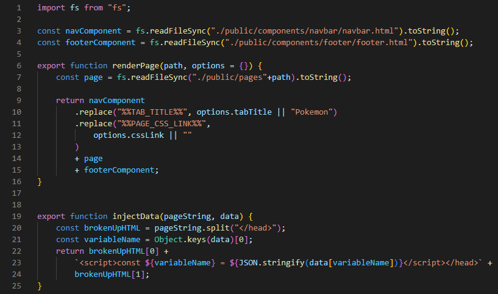

+ SEO (Search Engine Optimization)
+ Quick initial access
- Server cost
- Higher latency
+ Faster page rendering
- Lower latency
- Quick initial access
- SEO (Search Engine Optimization)
To make SSR we need to construct html pages in the backend and serve it when the endpoint is called.
Because we have to make multiple pages then we make a js file called templateEngine.
TemplateEngine will be a file with functions that helps make pages and inject data into the pages.
One main thing about the template that we combine nav and footer to the html file, therefore will nav and footer be on every html page.
